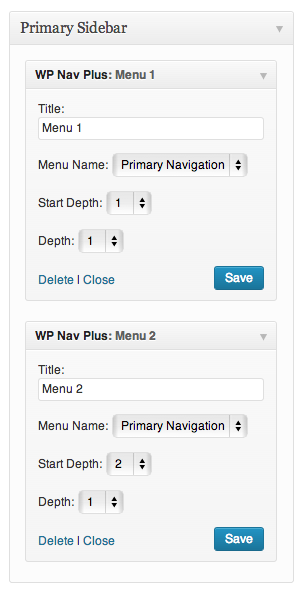
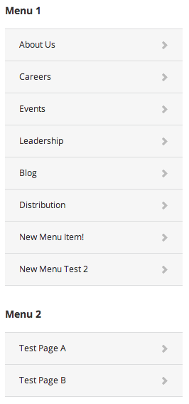

Created: 06/10/2013
By: Matt Keys
Email: me@mattkeys.me
Thank you for purchasing my plugin. If you have any questions that are beyond the scope of this help file, please feel free to email via my user page contact form here. Thanks so much!
WP Nav Plus has been designed as an easy and flexible way to implement side navigation menus and split menus in Wordpress. This documentation will cover two different methods for using this plugin, depending on your needs and you skill level (Novice or Advanced).
To install WP Nav Plus:
The easiest way to get up and running quickly with WP Nav Plus is to make use of the widget. In this section I will show you how to implement a basic WP Nav Plus widget on your site.
Now that your WP Nav Plus menu has been placed into the desired Sidebar, there are some optional settings that we can configure:
Experiment with using two WP Nav Menu widgets together to provide greater control over your menu.
In the screenshots below, the first widget (menu 1) is being used to display a sub menu showing all of the sub menu items of the current page. (Note the Start Depth of 1)
The second widget (menu 2) is being used to display a separate menu showing an extra level "deeper" in the menu (Note the Start Depth of 2). Test Page A and Test Page B are children of the "Careers" menu item in this example.
 WP Nav Menu has been designed from the ground up to be useful for Wordpress Developers and Advanced Wordpress users.
The documentation above has focused on using the WP Nav Plus widget as the easiest way to get started with WP Nav Plus. However for advanced users who want more control over the output of their menu, the widget can be skipped, and instead the WP Nav Plus function can be used directly in your templates.
WP Nav Plus is built upon the power of the built in wp_nav_menu function included with wordpress. This function is used in modern Wordpress templates to display navigation menus. With just a couple of tweaks these wp_nav_menu functions can be transformed into WP Nav Menu functions. See below for some examples:
Replace functions like this:
wp_nav_menu(array('theme_location' => 'my_menu', 'depth' => 1));
With functions like this:
wp_nav_plus(array('theme_location' => 'my_menu', 'start_depth' => 1, 'depth' => 1));
When implemented this way, WP Nav Plus is designed to accept any argument that you might normally use with wp_nav_menu. See the Wordpress Codex for a complete list of wp_nav_menu functionality: http://codex.wordpress.org/Function_Reference/wp_nav_menu.
Enjoy your plugin and thank you for your purchase!